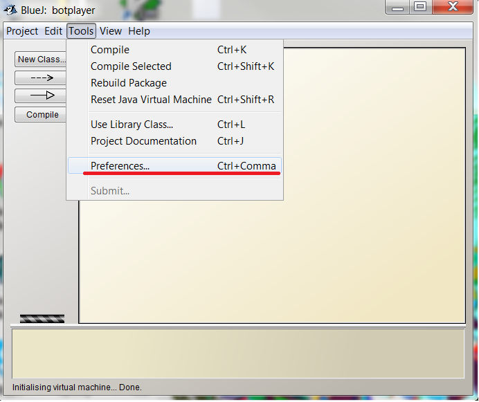

Setting up your IDE¶
An IDE can help with coding. 3 IDEs are demonstrated: Eclipse (recommended), IntelliJ, and BlueJ.
Python¶
To start the game, navigate to your development kit Folder and open the 3 batch file on Windows or 3 shell files on linux in the order given below. You can also call these in command line and pass parameters through them. Write your AI in PlayerAI.py
Eclipse (recommended)¶
Set Up¶
- Set up a workspace.
- Set up a new project under File -> New -> Java Project.
- Name your project and hit next.
- Check on Allow output folder for source folders then hit Libraries.
- Click Add External JARs.
- Navigate to the Java Library Folder and add both libraries.
- Close the Welcome Menu.
- Copy all the files in the Java folder into the project.
- Drag PlayerAI.java from botplayer into src. Your eclipse should look like the below picture.
- Start coding in PlayerAI.java
Starting Game¶
- To start a game, right click BotRampage.jar under Referenced Libraries. Go to Run As and click Java Application.
- Select RunGame - com.orbischallenge.main as the main class to run. A window will pop up.
- Right click RunClient.jar under Referenced Libraries. Go to Run As and click Java Application.
Next Steps: If you need command line options: go to Run Configurations and change arguments to RunGame.
IntelliJ¶
Set Up¶
- Click Create New Project.
- Select JDK if needed by clicking New... -> JDK and select the appropriate JDK.
- One IntelliJ has detected JDK, click Next.
- Name your project and hit Finish.
- Copy all the files in the folder ‘Java’ into your project (top level folder) except PlayerAI.class if it exists. Drag and drop would work as well as copy and pasting.
- Right click the folder botplayer and go to Mark Directory As and click Sources Root.
- Go to Java Library and right click BotRampage.jar and click Add as Library.
- Go to Java Library and right click JavaClient.jar and click Add as Library.
- Start coding in PlayerAI.java.
Starting Game¶
- To start the game, navigate to your IntelliJ Project Folder and open the 3 batch file on Windows or 3 shell files on linux in the order given below. You can also call these in command line and pass parameters through them.
BlueJ¶
Set Up¶
- Go to Project and click Open Non BlueJ.
- Navigate and select the folder botplayer and click open in BlueJ.
- Go to Tools and select Preferences.

- Go to the Libraries tab and click Add.
5.Open BotRampage.jar.
- Do the same with JavaClient.jar.
- Click Ok on both windows.
- Click Tools and Click on Rebuild Package.
- Click Tools and Click on Reset Java Virtual Machine.
- Start coding in PlayerAI.java.
Starting Game¶
- To start the game, navigate to your development kit Folder and open the 3 batch file on Windows or 3 shell files on linux in the order given below. You can also call these in command line and pass parameters through them.